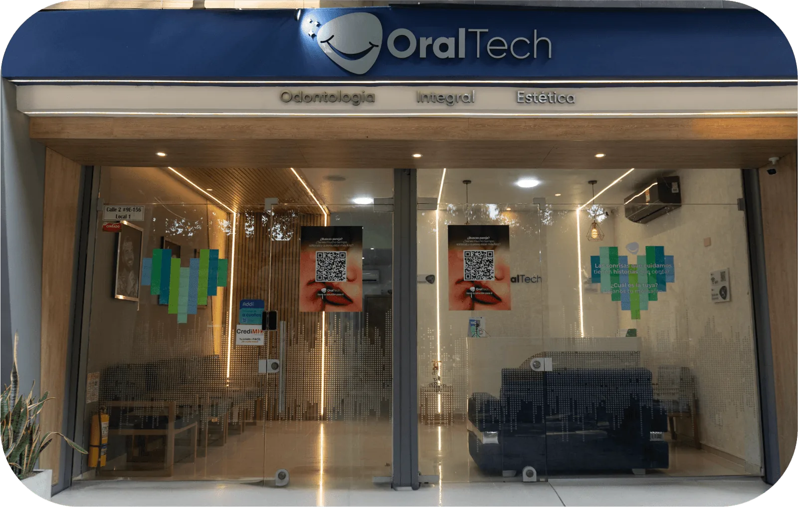
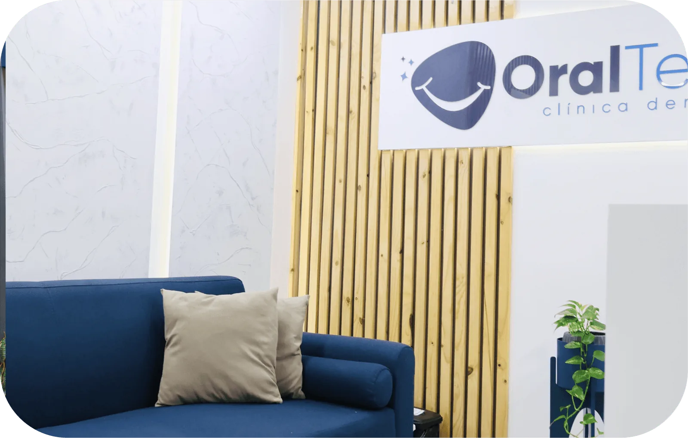

Quinta Oriental, en Cúcuta, y El Poblado, en Medellín. Entre las dos fichas de Google suman 36 opiniones. Aquí puedes ver dónde quedamos, qué tratamientos hacemos y cómo escribirnos.

Cl. 2 #9 Este-156, Local 1, Quinta Oriental, Cúcuta, Norte de Santander.
5,0 estrellas con 25 opiniones. Ver la ficha
Escríbenos por WhatsApp al +57 322 413 0747 y te confirmamos horarios. Ver la sede

Cra. 43A #7-50, El Poblado, Medellín, Antioquia.
4,6 estrellas con 11 opiniones. Ver la ficha
Escríbenos por WhatsApp al +57 301 618 4618 y te confirmamos horarios. Ver la sede
OralTech es una clínica dental que atiende en dos ciudades: Cúcuta, en el barrio Quinta Oriental, y Medellín, en El Poblado. Su trabajo se concentra en seis tratamientos: diseño de sonrisa, microdiseño, ortodoncia, blanqueamiento, limpieza dental e implantes dentales.
Entre las dos fichas de Google suman 36 opiniones: 25 en la sede de Cúcuta, con 5,0 estrellas, y 11 en la de Medellín, con 4,6. Si quieres saber si tu caso se puede tratar, escríbenos por WhatsApp y te confirmamos horarios y disponibilidad.
En resina, en ceromero o en cerámica. La resina es la opción más económica, conservadora con el diente y de fácil mantenimiento. El ceromero combina la estética de la cerámica con la flexibilidad de la resina. La cerámica es la de mayor durabilidad y estética. Ver diseño de sonrisa
Técnica estética mínimamente invasiva para mejorar detalles de tu sonrisa: forma, tamaño, color o alineación. Con resina o ceromero, sin desgastar el diente y preservando su estructura. Ver microdiseño
Convencional, en zafiro o invisible. Corrige la posición de los dientes y los maxilares. Los brackets de zafiro son transparentes y no se tiñen; los alineadores invisibles son transparentes y removibles. Ver ortodoncia
Procedimiento de odontología estética que busca aclarar el diente eliminando manchas dentales. Es indoloro y preserva la salud oral. Ver blanqueamiento
También llamada profilaxis. Remueve la placa bacteriana y el sarro de los dientes y las encías. Ver limpieza dental
Un dispositivo médico en forma de tornillo que se inserta en el hueso maxilar para reemplazar la raíz de un diente perdido y sostener la corona. Ver implantes dentales
"Quedé muy feliz con el resultado de mi diseño de sonrisa. Desde el primer momento recibí una atención excelente, con mucho profesionalismo, dedicación y cuidado en cada detalle. El resultado superó mis expectativas."
"Excelente trabajo. Súper recomendados."
"Excelente atención y servicios prestados, trabajos de la mejor calidad. Súper recomendados."
Escoge la sede que te quede más cerca. Por WhatsApp resolvemos tus dudas y te confirmamos horarios.